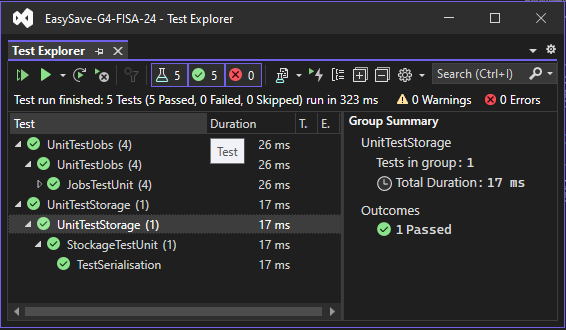

Easy Save
Introduction
livrable 1 contains the first functional version of EasySave, as specified by ProSoft.
This version initiates the development of a .NET Core console application for managing backup tasks.
Prerequisites
- Installation process
- Clone the livrable-1 branch and open the project with Visual Studio 2022.
- Make sure you have installed .NET Core 6.0.
- Software dependencies
- .NET Core 6.0
- Visual Studio 2022
Execute Easy Save
Windows
Run EasySave.exe in directory ../G4-FISA-24/EasySave-G4-FISA-24/EasySave/bin/Debug/net6.0/EasySave.exe.
Linux
Run ./EasySave after publishing from visual studio.
Publishing EasySave
You need to specify the 'Target runtime' according to the operating system.

Tests
Open the Test Explorer in Visual Studio and run the unit tests.


All tests are tested during the CI/CD phase, but it's best to run the tests before pushing.
Latest versions
Please consult the "releases" tab to access the latest version of livrable 1 (Pipelines -> Releases):
https://dev.azure.com/faikmehmeti/G4-FISA-24/_release?_a=releases&view=mine&definitionId=1
Build and test
A download request to the develop-livrable-1 branch automatically triggers a build and test process (unit tests only).
A pull request to the livrable-1 branch automatically triggers a continuous integration process, from build and test to release.
These processes can be visualized via pipelines: https://dev.azure.com/faikmehmeti/G4-FISA-24/_build
NOTES: A single agent can manage the execution of a single pipeline; parallelism is not possible.
Features
- Sequential backup
- Daily logs
- Status logsv
- Select language
- List jobs
- Load job configuration
- Create a job
- Delete a job
- Launch jobs
Console application entry point
using View = EasySave.Views.View;
namespace EasySave // Note: actual namespace depends on the project name.
{
/// <summary>
/// Application entry point
/// </summary>
internal class Program
{
[STAThread]
static void Main(string[] args)
{
View pView = new View();
//Lance le program principale
pView.Run();
}
}
}
Architecture

The architecture is based on an MVVM model with :
- Models : classes representing data (CJob, CJobManager, CSettings, etc.)
- Views: classes representing views (BaseView, View, JobView, etc.).
- ViewModels: classes linking models and views.
Log System
Default location of CJobManager and CSettings and location of log model stored using the logging classes in the Logs package.
The current location of event logs is stored in the Logs folder.
The current location of user settings is stored in the root directory Settings.json.
The location of backup jobs is stored in the Jobs folder.
Logs with names formatted as Logs - 2024-02-15 are daily logs.
The Logs.json file is the log status.
Continuous Integration (CI) and Continuous Deployment (CD) processes using Azure DevOps
Continuous Integration configuration
Triggering pipelines
Continuous integration pipelines are configured to trigger automatically when a pull request is made to the main branch. Continuous integration validation is a prerequisite for any code merge.
Integration process
- Build: Compilation of source code into an executable or deployable package.
- Automated Testing: Execution of tests to verify code quality and functionality.
- Release Publishing: Creation and storage of release artifacts in Azure DevOps.

Continuous Deployment Management
Although continuous integration is automated, continuous deployment currently requires manual intervention.
Access to Releases
https://dev.azure.com/faikmehmeti/G4-FISA-24/_release

Here you can track the deployment status of each release.
This link allows you to follow the deployment status for each release.
Deployment Management
By selecting a release, you will be taken to a page where continuous deployment can be managed. Currently, deployments must be performed manually for each stage.